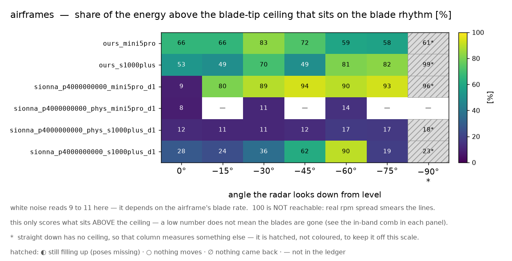
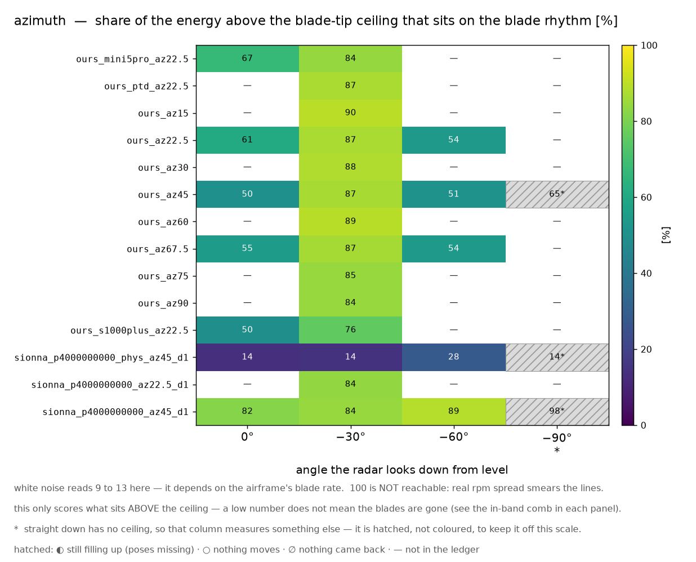
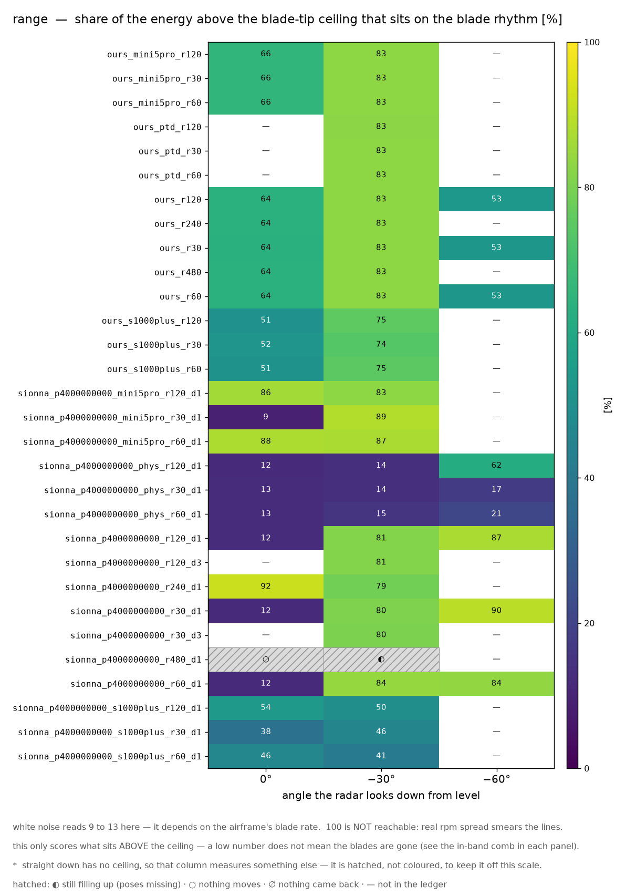
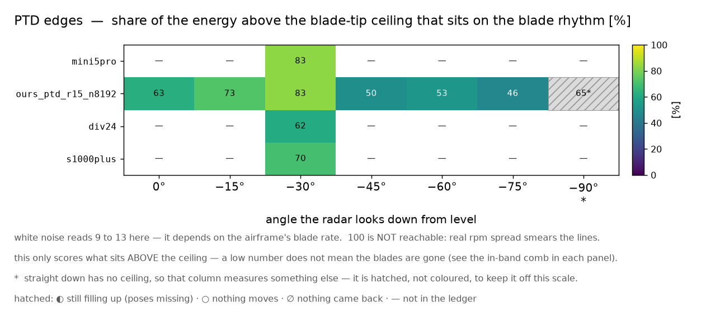
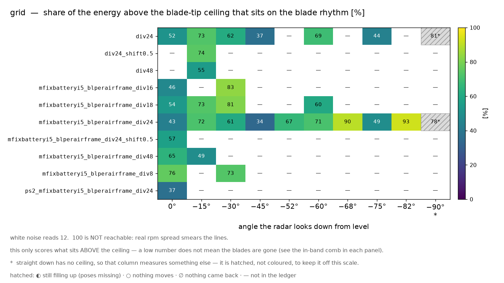
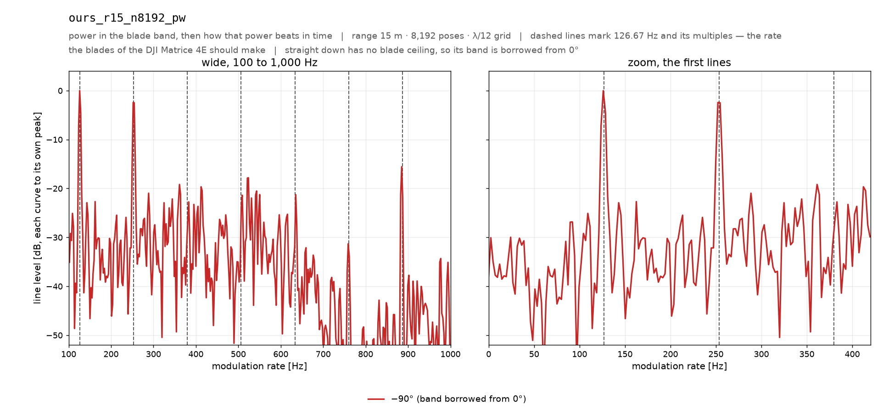

⭐먼저 볼 것 — 8/18 덱 이후에 한 실험 (한 장 색인)
덱에 실린 데까지가 기준선이고, 그 뒤 실험 30 건이 무엇을 물어 무엇으로 답했는지를 «물음 / 판정 / 근거 원장 / 볼 곳» 네 칸으로 한 장에 모았다. 이 갤러리의 어느 그림이 어느 실험의 답인지도 거기서 이어진다.
덱에 실린 데까지가 기준선이고, 그 뒤 실험 30 건이 무엇을 물어 무엇으로 답했는지를 «물음 / 판정 / 근거 원장 / 볼 곳» 네 칸으로 한 장에 모았다. 이 갤러리의 어느 그림이 어느 실험의 답인지도 거기서 이어진다.
micro-doppler atlas
드론 마이크로도플러 아틀라스 — 그림으로 넘겨 보기
실험 원장에 쌓인 팔 115 개 · 칸 337 개를 두 종류의 그림 — 마이크로도플러 맵과 블레이드 대역 에너지 — 으로 전부 구워 놓은 갤러리다. 주제 카드를 눌러 들어가면 팔마다 그림 두 장과 앙각별 수치 표가 나란히 있다. 그림을 클릭하면 원본 크기로 열린다.
9주제
115팔(조건 하나)
337칸(팔 × 앙각)
258그림
3.5 GHz주파수
19.7 kHz표본율(PRF)
먼저 — 이 그림들을 어떻게 읽나
두 종류뿐이다. 하나는 시간에 따른 도플러 그림(맵), 다른 하나는 그 도플러 대역의 힘이 뛰는 리듬(대역 에너지)이다. 아래 예시 두 장이 나머지 전부와 같은 형식이다.

예시 ·
ours — 가로가 시간, 세로가 도플러 주파수(움직이는 것 때문에 되돌아온 신호의 주파수가 밀린 양)다. 위줄은 받은 그대로, 아래줄은 가만히 있는 부분(정지 성분)을 뺀 판이다. 흰 점선이 날개끝 상한 — 날개가 만들 수 있는 가장 빠른 도플러이고, 그 위에 무엇이 있으면 날개 말고 다른 것이다. 규칙적으로 되풀이되는 밝은 세로 줄무늬가 날개가 시선을 지나갈 때의 번쩍임이다. ⚠패널마다 자기 최댓값으로 밝기를 맞추므로 패널끼리 밝기는 비교하지 않는다 — 모양만 읽는다.
예시 ·
ours — 날개 대역 — 날개끝 상한의 0.35~1.0 배 띠(상한 아래다) — 의 힘이 시간에 따라 오르내리는 리듬을 주파수로 편 그림이다. 가로가 리듬의 빠르기[Hz], 세로가 그 세기다. 점선이 예측 박자의 정수배 — 점선 자리에 뾰족한 봉우리가 서면 날개가 그 박자로 규칙적으로 지나간다는 뜻이고, 봉우리 없이 뭉개져 있으면 그냥 잡음이다. 왼쪽은 넓게, 오른쪽은 첫 봉우리 부근을 확대한 판이다. 색은 앙각(위에서 내려다본 각)이다.용어 — 처음 나오는 말
- 도플러 — 움직이는 것에 맞고 되돌아온 신호는 주파수가 밀린다. 그 밀린 양[Hz]이 도플러다. 빠를수록 크다.
- 박자(f_flash) — 날개가 시선을 지나가는 횟수[Hz] = 날개 수 × 회전수. 기체마다 다르다.
- 날개끝 상한(f_tip) — 날개 끝이 만들 수 있는 가장 큰 도플러. 위에서 내려다볼수록 작아지고, 바로 아래(−90°)에서는 0 이 된다.
- 리듬 몫[%] — 날개끝 상한 «위»에 남은 힘 중 박자의 정수배(±8 Hz)에 붙은 몫. ⛔이 수는 상한 위만 본다. 날개 무늬가 상한 «아래»에 멀쩡히 있어도 0 % 가 나올 수 있다 — 0 % 는 «리듬이 없다»가 아니라 «이 자리에선 못 읽는다»이다. 백색잡음 값은 팔마다 다르고(표에 칸마다 적었다), 100 은 실제 자료에서 도달 불가다.
- 빗살 대비[dB] — ⭐리듬 몫의 짝. 상한 아래(날개가 실제로 사는 자리)에서 «박자의 정수배 자리 ÷ 그 사이 자리» 전력비다. 백색잡음이 0 dB. 리듬 몫이 0 인데 이 수가 +40 dB 면 날개는 있고 잣대가 못 읽은 것이다. 두 수가 함께 널일 때만 «안 보인다»고 말한다.
- 정지 성분 제거 — 가만히 있는 부분(시간 평균)을 빼는 것. 레벨(dB)·리듬 몫·박자는 전부 정지 성분(시계열 평균) 제거 후에 잰다.
- 앙각 — 표적을 얼마나 위에서 내려다보는가. 0° 가 옆에서, −90° 가 바로 위에서다.
- 팔 — 조건 하나를 가리키는 말(예: 엔진 · 거리 · 스위치 조합 하나). 팔 이름이 곧 조건이다.
그림을 만든 규약
- md_mapstyle.flash_spec — 블레이드 주기의 auto_periods 배 조각 · hop 2 · 8× 제로패딩. 마이크로도플러 표현은 STFT 만 쓴다.
- 맵은 20 ms 부터 60 ms 창.
- 기체 태그(_mini5pro_ 등)가 붙은 팔은 그 기체의 박자(날개수 × 호버rpm/60)로 잣대를 세운다. 원장 _meta.f_flash_hz 는 기본 기체 값이라 그대로 쓰면 틀린다.
- 앙각 −90° 는 f_tip = 0 이라 «날개끝 상한 위» 잣대가 퇴화한다(tip_ceiling_degenerate). 대역은 0° 것을 빌린다(band_borrowed_from_0deg).
- 기본값 — 주파수 3.5 GHz · 표본율 19700 Hz · 기본 기체 matrice4e · 기준 거리 15 m.
주제 9 개

01 · base engines
세 엔진이 같은 드론을 어떻게 그리나
기본 엔진 — 엔진·광선예산·자세수, ⚠거리도 10 m·15 m 로 섞여 있다
그림 43 장 · 팔 19 개 · 칸 98 개

02 · physics switches
어느 물리 스위치가 무늬를 바꾸나
스위치 — 굴절·회절·모서리·확산을 켜고 끈 조합
그림 78 장 · 팔 36 개 · 칸 80 개

03 · airframes
기체를 무늬로 가릴 수 있나
기체 3 종 — 박자가 기체마다 다르다
그림 14 장 · 팔 6 개 · 칸 38 개

04 · azimuth
드론이 돌면 어떻게 되나
방위 — 정면 말고 45° 에서 본 판
그림 31 장 · 팔 14 개 · 칸 29 개

05 · scene parts
날개 신호는 어디서 오나
부품 분해 — 프로펠러만 / 동체만
그림 8 장 · 팔 3 개 · 칸 9 개

06 · range
멀어지면 어떻게 되나
거리 — 15 m 아닌 판(30 m)
그림 66 장 · 팔 30 개 · 칸 64 개

07 · PTD edges
모서리 보정이 무늬를 바꾸나
PTD — 모서리 보정을 켠 판
그림 10 장 · 팔 4 개 · 칸 10 개

08 · grid
계산을 촘촘히 하면 답이 변하나
격자 — λ/12 대신 더 촘촘한 격자
그림 6 장 · 팔 2 개 · 칸 8 개

09 · plane wave
파면 곡률이 결과를 바꾸나
평면파 — 구면파 대신 평면파로 조명한 판
그림 2 장 · 팔 1 개 · 칸 1 개
팔 이름 읽는 법
팔 이름은 조건을 그대로 적은 것이라 길다.
예: sionna_p4000000000_phys_r15_n8192_d1 = PathSolver · 광선 40 억 발 · 물리 전부 켬 ·
거리 15 m · 자세 8,192 개 · 반사 깊이 1. 토막마다 뜻은 이렇다.
| 토막 | 뜻 | 없으면(기본값) | 쓰인 팔 |
|---|---|---|---|
| ours | 우리 커널(SBR+PO). 광선을 쏘아 맞은 면에서 되쏘는 셈을 직접 한다. 동체가 있어 날개가 가려지는 판이다. | — | 37 |
| ours_free | 같은 우리 커널인데 동체의 «면»만 빼서 가림을 없앤 대조군. 꼭짓점·상자·광선 격자는 그대로라 «동체가 막느냐» 하나만 갈린다. | — | 1 |
| sionna | Sionna RT 의 경로 추적기(PathSolver) 팔. | — | 77 |
| p<N> | 쏘는 광선 수. p4000000000 = 40 억 발. | 거리로 정하는 규칙값 | 75 |
| phys | PathSolver 물리를 전부 켠다 — 굴절 · 회절 · 모서리 회절. | 셋 다 끔 | 12 |
| swR#D#E#F# | 스위치를 비트로 직접 준 판. R 굴절 · D 회절 · E 모서리 회절 · F 확산 반사이고 1 이 «켬». 예 swR1D0E0F1 = 굴절 + 확산 반사. | — | 20 |
| stockdef | PathSolver 를 순정 기본값 그대로 — 굴절 켬 · 회절 끔 · 모서리 끔 · 확산 끔 · 깊이 3. 우리 «끔» 판과도 «켬» 판과도 다른 제3 의 조합이다. | — | 1 |
| only<x> | 스위치를 하나만 켠 판 — onlyrefr 굴절 · onlydiffr 회절 · onlyedge 모서리 회절 · onlydepth3 깊이 3. | — | 15 |
| d<N> | PathSolver 가 몇 번까지 튕긴 경로를 세는가(반사 깊이). | 물리를 켜면 3, 아니면 1 | 55 |
| parts<…> | 장면에 넣을 부품. partsprop = 프로펠러만 · partsnoprop = 프로펠러를 뺀 나머지. | 기체 전체 | 5 |
| 기체 태그 | 표적 기체를 바꾼 판 — mini5pro · s1000plus. ⚠박자와 날개끝 상한이 함께 바뀐다. | 원장 기본 matrice4e | 26 |
| az<N> | 방위각[°] — 드론을 옆에서 보는 각. az45 = 45° 옆. | 0°(정면) | 17 |
| r<N> | 표적까지 거리[m]. r15 = 15 m · r30 = 30 m. | 옛 기본 10 m | 107 |
| n<N> | 찍은 자세 수(시간 방향 표본 수). n8192 = 8,192 자세. | 원장 기본 4,096 | 108 |
| div<N> | 우리 커널이 표면을 자르는 격자 간격 λ/N. div24 = λ/24. | 규약값 λ/12 | 3 |
| ptd | 우리 팔의 모서리 회절 보정(PTD) 켬. | 끔 | 8 |
| pw | 평면파 조명 — 무한히 먼 곳에서 오는 평평한 파(구면파 대신). | 구면파 | 1 |
⚠ 읽을 때 주의
1. 바로 아래(−90°)는 잣대가 망가진다.
날개가 도는 면이 시선과 수직이라 날개끝 상한이 0 Hz 다. 상한이 0 이면 «상한 위»가 전 대역이 되어
리듬 몫이 «날개가 만들 수 없는 자리에 무엇이 남았나»를 재는 잣대이기를 그만둔다.
이 아틀라스에서 그런 칸은 32 개이고 표에 ▲ 잣대 퇴화 로 적었다.
대역 그림도 −90° 는 0° 의 대역을 빌려 그린다(↺ 대역 빌림).
⭐주제 요약 지도에서도 그 열은 색을 안 칠하고 빗금으로 덮는다 — 같은 0~100 색눈금에 올려 두면
한눈에 «직하방이 제일 깨끗하다»로 읽히기 때문이다(실제로 −90° 열의 값이 가장 높다).
2. 엔진끼리 «절대 세기»를 비교하지 마라.
우리 커널과 PathSolver 는 눈금이 다르다. 같은 표적을 같은 자리에서 재도 «−70 dB»와 «−94 dB»는
세기의 비교가 아니다 — 광선 예산 · 격자 · 정규화가 엔진마다 다르게 들어간 수라, 두 팔의 dB 를 빼는 순간
그 차이는 물리가 아니라 구현의 차이가 된다.
그래서 이 갤러리는 모양과 눈금에 무관한 수(리듬 몫[%] · 빗살 대비[dB] · 박자[Hz] ·
박자÷예측)로만 말한다. ⚠그 대가로 거리를 읽을 수 없다 — 모양 잣대는 에코 전체가 공통 인수로
작아지는 것에 둔감하다(06range 참고).
같은 팔 안에서 앙각끼리 dB 를 비교하는 것은 된다(같은 눈금이다).
3. 격자 흔들림 밴드 안이면 판정 불가.
표면 격자를 λ/12 에서 λ/24 로 조이기만 해도 잣대가 움직인다. 그 폭이
리듬 몫 21.8 %p · 움직이는 전력 3.86 dB 다(
outputs/grid_convergence_check.json,
앙각 네 점에서 잰 최댓값). 두 팔의 리듬 몫 차이가 21.8 %p 안이면 «차이가 있다»고 말할 수 없다.
⚠이 밴드는 우리 커널의 격자 축(λ/12 ↔ λ/24)에서 나온 수다 — PathSolver 에는 그 축이 아예 없다.
PathSolver 팔끼리의 차이에 이 밴드를 대는 것은 빌려 쓰는 것이고, 그 사실을 알고 써야 한다.
4. 거리가 다른 팔이 섞여 있고, 근접장은 기체마다 다른 자리에서 시작한다.
이름에
r 토막이 없는 팔은 옛 기본 10 m 다. 나란히 놓을 때는 거리를 함께 적는다
(비교판 그림의 줄 라벨에 거리를 박아 두었다).
⭐원거리장 경계는 2D²/λ 라 표적이 커지면 멀어진다 — 기본 기체(matrice4e)
는 14.08 m 이지만 기체마다 다르다. 아래 표의 «근접장» 칸이 그 판정이다.
근접장에서는 파면이 표적 위에서 휘므로 그 팔의 차이를 «엔진 차이»로 읽으면 안 된다.
| 거리 | 팔 수 | 어느 팔인가 |
|---|---|---|
| 10 m | 8 | ours · sionna · sionna_p1000000000 · sionna_p250000000 · sionna_p250000000_phys · sionna_p4000000000 · sionna_p4000000000_phys_n8192_d1 · sionna_phys |
| 15 m | 73 | 기준 거리 — 나머지 팔 전부 |
| 30 m | 10 | ours_mini5pro_r30_n8192 · ours_ptd_r30_n8192 · ours_r30_n8192 · ours_s1000plus_r30_n8192 · sionna_p4000000000_mini5pro_r30_n8192_d1 · sionna_p4000000000_onlyrefr_r30_n8192 · sionna_p4000000000_phys_r30_n8192_d1 · sionna_p4000000000_r30_n8192_d1 · sionna_p4000000000_r30_n8192_d3 · sionna_p4000000000_s1000plus_r30_n8192_d1 |
| 60 m | 9 | ours_mini5pro_r60_n8192 · ours_ptd_r60_n8192 · ours_r60_n8192 · ours_s1000plus_r60_n8192 · sionna_p4000000000_mini5pro_r60_n8192_d1 · sionna_p4000000000_onlyrefr_r60_n8192 · sionna_p4000000000_phys_r60_n8192_d1 · sionna_p4000000000_r60_n8192_d1 · sionna_p4000000000_s1000plus_r60_n8192_d1 |
| 120 m | 10 | ours_mini5pro_r120_n8192 · ours_ptd_r120_n8192 · ours_r120_n8192 · ours_s1000plus_r120_n8192 · sionna_p4000000000_mini5pro_r120_n8192_d1 · sionna_p4000000000_onlyrefr_r120_n8192 · sionna_p4000000000_phys_r120_n8192_d1 · sionna_p4000000000_r120_n8192_d1 · sionna_p4000000000_r120_n8192_d3 · sionna_p4000000000_s1000plus_r120_n8192_d1 |
| 240 m | 3 | ours_r240_n8192 · sionna_p4000000000_onlyrefr_r240_n8192 · sionna_p4000000000_r240_n8192_d1 |
| 480 m | 2 | ours_r480_n8192 · sionna_p4000000000_r480_n8192_d1 |
| 기체 | 표적 크기 D | 원거리장 경계 2D²/λ | 이 원장의 거리 | 판정 |
|---|---|---|---|---|
| DJI Matrice 4E | 0.78 m | 14.08 m | 10 m · 15 m · 30 m · 60 m · 120 m · 240 m · 480 m | ⚠10 m 는 근접장(경계의 0.71 배) |
| DJI Mini 5 Pro | 0.45 m | 4.79 m | 15 m · 30 m · 60 m · 120 m | 전부 밖(원거리장) |
| DJI S1000+ | 1.92 m | 85.95 m | 15 m · 30 m · 60 m · 120 m | ⚠15 m 는 근접장(경계의 0.17 배) · 30 m 는 근접장(경계의 0.35 배) · 60 m 는 근접장(경계의 0.70 배) |
5. 수를 낼 자격이 없는 칸이 14 개 있다 — 그 칸에는 값이 없다.
- 되돌아온 게 없는 칸 9 개 — 원장의 에코가 통째로 0 이다 (✕ 되돌아온 것 없음). 원장 레벨의 −6000 dB 는 잰 세기가 아니라 «없음» 표식이다.
- ⭐아직 덜 찬 칸 2 개 — 자세가 절반만 들어왔다 (◐ 덜 참). 빈 자세 자리의 0 채움이 스펙트럼을 PRF/2 · PRF/4 에 복제해 «상한 위»를 삼키므로 리듬 몫이 0 % 로 주저앉는다. 물리가 아니라 결측 자국이라 잣대를 내지 않는다 — 원장을 다시 병합해야 한다.
- 움직이는 것이 없는 칸 3 개 — AC/DC 가 반올림 바닥 아래다 (○ 움직이는 것 없음). 거기서 뽑은 «박자»는 마지막 자리 한 칸을 흔든 자리라 재현되지 않는다.
- 자세 몇 개가 튄 칸 59 개 — ⚡ 튐 딱지가 붙은 칸의 박자는 회전이 아니라 튄 자세들의 간격이다. 맵도 그 튐 하나가 색역을 다 먹어 나머지가 바닥색으로 깔린다.
6. 아직 못 고친 것 — 알고 쓰라고 적어 둔다.
- 덜 찬 칸 2 개의 참값 — 원장을 다시 병합해야 나온다. 이 갤러리는 원장을 읽기만 하므로 여기서는 못 고친다. 세 칸 중 둘은 자세가 뭉텅이로 빠져 있어 «0 을 걷어내고 다시 재는» 길도 없다(균일 표본이 아니다).
- 주제 분류는 아직 이름 토막으로 거리를 본다 — 그래서
_r토막이 없는 10 m 옛 팔이 «기본 엔진» 주제에 남아 있다. 원장range_m으로 바꾸면 그 팔들이 거리 주제로 옮겨가 그림 파일 이름이 전부 바뀌므로, 주제를 다시 짤 때 함께 고친다. 그 사이의 안전장치가 위의 거리 표와 그림 속 거리 라벨이다. - 맵은 패널마다 자기 최댓값으로 밝기를 맞춘다 — 그래서 거리와 세기를 그림에서 읽을 수 없다. 공통 눈금을 쓰면 눈금이 다른 두 엔진을 한 색역에 올리는 더 큰 거짓이 되므로 그대로 두었다.
- 리듬 몫의 창 반폭은 8 Hz 고정 — 이미 인용된 수와 갈리지 않게 정의를 유지했다. 그 대가로 높은 배음일수록 창 밖으로 새어 100 은 도달 불가다.
- 박자와 맵은 다른 구간에서 잰 수다 — 박자는 전 구간(0.42 s), 맵은 20~80 ms 창이다.